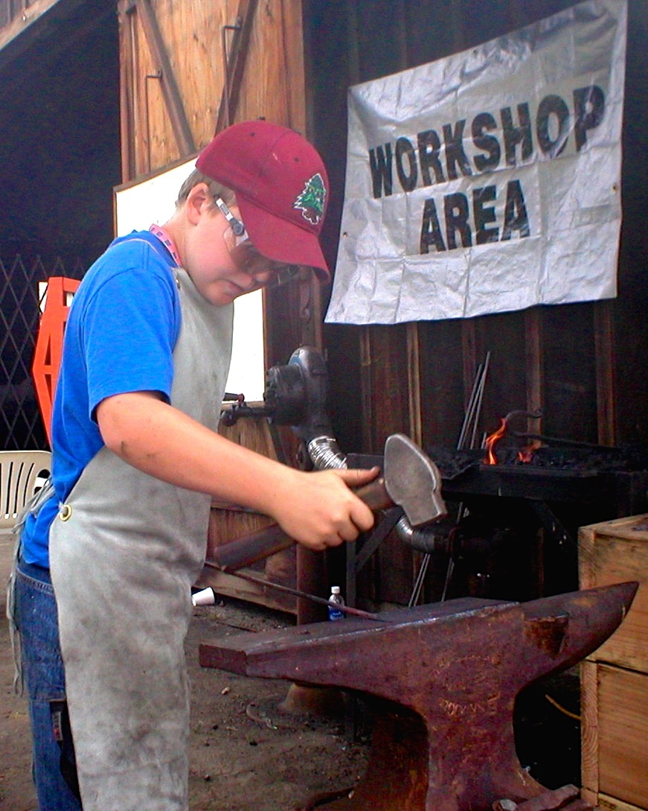
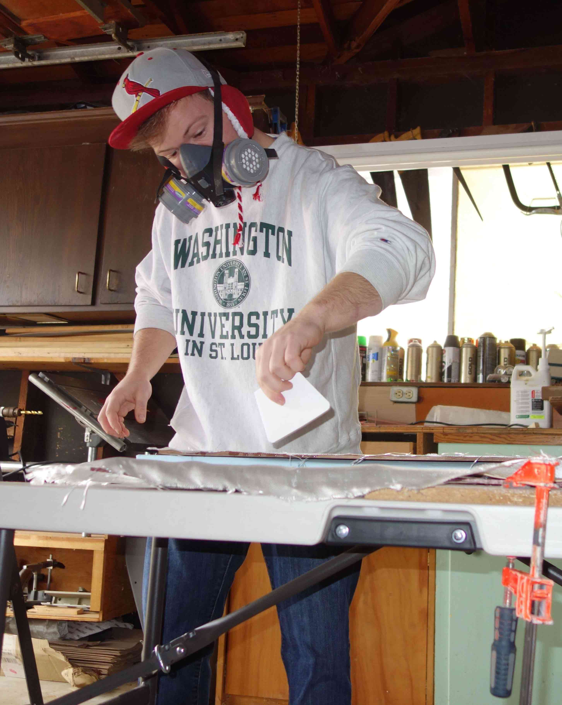
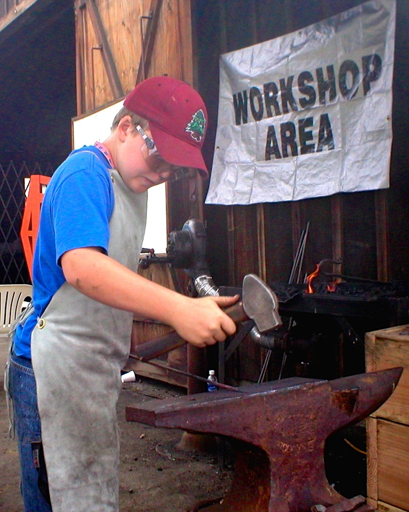
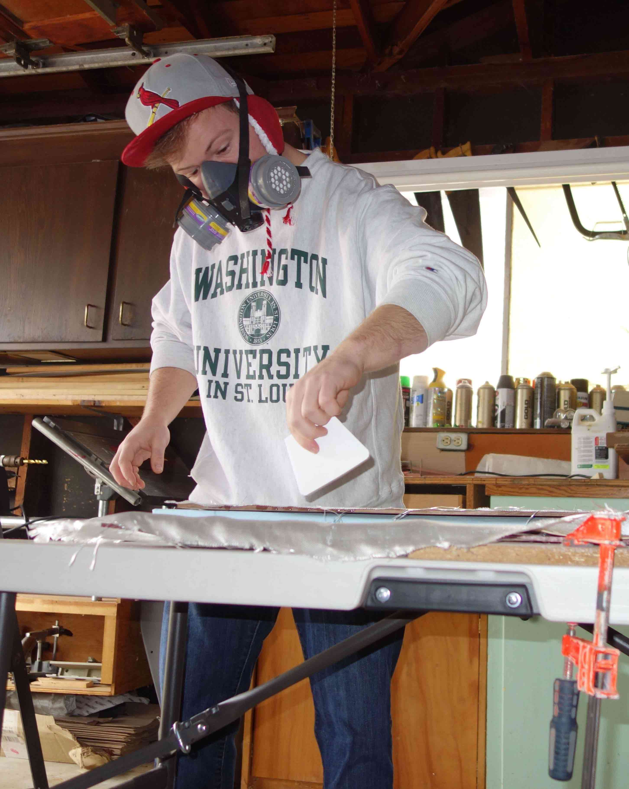

Steve The Engineer
 



DISCLAIMER: Things are still a bit under construction around here...
Hey I'm Steve and this is my portfolio!
I'm a current Mechanical Engineering graduate student at CU Boulder interested in
medical devices, robotics, consumer electronics, and just about any other mechanical
design challenge. My experience is in CAD, fabrication, DFMA, and engineering
principles, but I'm always looking for opportunities to expand and improve!
When I'm not busy with the design and build process you can find me rock climbing in
Boulder Canyon, trying to tire out my dog at the park, or continuing the slow grind of
learning to code in my free time.